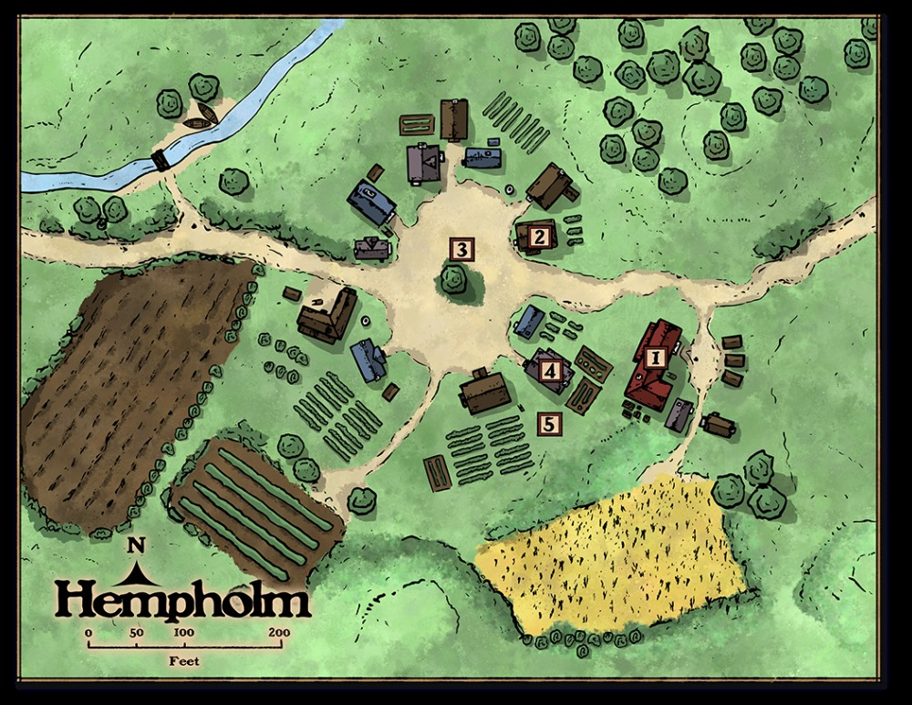
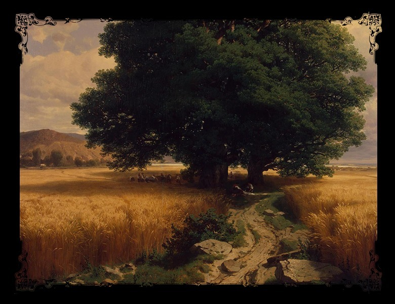

Dogfood asset experiment (handoff §5) — source-relative media resolved through the dev server's
traversal-safe repo middleware (safeResolve: no ../, no file://, repo-scoped, no-store).
Image bytes are local-only licensed module art (gitignored); they never enter World Graph state.
Source art & maps — Hempholm
Of Conks & Cons v2.1 · licensed PDF media, mined to gold package · served from
packet/local/media/ via source-relative URLs
Hempholm village map (areas 1–5)
map-hempholm.jpgmodule p. 6 village map

local fixture missing — populate packet/local/media from the licensed gold package
'" />
Figure 1 — The Shacks
fig-1-the-shacks.jpgvillage plate, Area 1
Area 5 — the harvest (Jove garden)
art-area-5-harvest.jpgpastoral plate, Area 5

local fixture missing — populate packet/local/media from the licensed gold package
'" />
Experiment answers (handoff §5): an attached source asset is identified by source-artifact-relative path;
relative Markdown refs can survive import unrewritten; the browser resolves them against a source-owned
asset root; the smallest safe server authority is a traversal-safe, repo-scoped static resolver (here: the
existing dev middleware); full Asset-domain identity is NOT needed for the first capability; migration path
is a narrowly owned source-asset route later (DungeonMindServer byte storage).